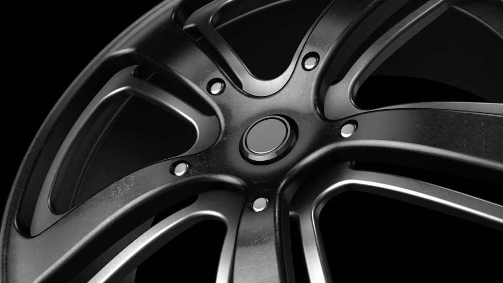
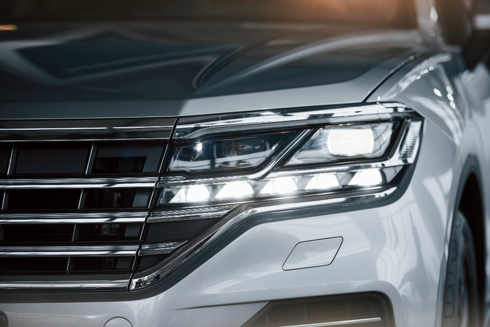

Наши услуги
Удаление мелких царапин, реставрация пастика и
кожанных элементов салона. Полировка осуществляется
только новыми насадками с использованием полировочной пасты.
После полировки на поверхностях салона образуется защитный
слой, который будет отталкивать загрязнения.
Покраска дисков осуществляется в нашем цеху порошковой краской, с использованием пулверизатора. После покраски мастер бережно укладывает каждый диск в камеру сушки, благодоря чему вы сможете забрать их уже в этот же день.
Оклейка задних фонарей пленкой. При работе
мастер использует специальный греющий
фен. Мы используем только качественную
плёнку разрешенную законодательством.
Выбор светопропускаемости мы оставляем за клиентом.
Внутренняя тонировка стёкл даст им защиту от образования
затёртостей, частично укроет вас от солнечных лучей,
а также придаст стиля вашему автомобилю.
Оклейка проводится только качественной плёнкой,
резрешенной законодательством.
Обтяжка элементов салона натуральной кожзамом.
В случаях когда потёртости или порезы на кожанных
элементах слишком глубокие, потребуется перетяжка этих
элементов.
Мы не используем материалы из натуральной кожи.
Установка и замена ксеноновых ламп и связующих элементов. Мы даём годовую гарантию на срок службы наших комплектующих. В стоимость работ входит настройка ламп в соответсвтвии с законодательством.
Почему мы?
Качество
Удобство
Сезонность
Мы используем только качественные полироли, прошедшие проверку
временем. Вся химия хранится в специально отведённом месте.
Мы ведём учёт каждой позиции, поэтому мы не работаем "просрочкой".
Весь инструмент мы ежегодно сдаём в ремонтный цех, а если
он теряет эффективность выбрасываем.
Мы работаем по записи, поэтому когда вы отдаёте нам машину, мы сразу принимаемся за работу. В холле у нас большое пространство с диванами, телевизором и кофеваркой. Мы постарались обостроить наш зал ожидания специально для вас, чтобы время пока мы работаем вы провели с комфортом.
Наша работа не прекращается ни в жару, ни в холод. У нас современный полностью оборудованный цех, с отоплением, кондиционером, вентиляцией и всем необходимым профессиональным оборудованием для того, чтобы оказывать вам все возможные услуги в области детелинга и зимой и летом.
В отличии от многих других детейлинговых сервисов, мы несём полную ответственность за ваш автомобиль. Если мы находим неисправность, то сразу вам об этом сообщаем. Также в процессе работы, мастера записывает камера видеонаблюдения. После проведения работ мы даём гарантию на оказанную услугу.
В нашем арсенале только качественная химия, прошедшая проверку временем.
Все материалы для работы мы храним в специально отведённом помещении,
в нём установлена сестема вентиляции и охлаждения. Каждый месяц наш
сотрудник сверяет маркеры на ёмкостях, чтобы исключить использованием
просроченного продукта.
Мы сотрудничаем только с проверенными поставщиками
автохимии.
В нашей компании каждый сотрудник влюблён в автомобили. Мы заботимся о каждом
авто как о своём, а также нам важно радовать вас. Мы перенимаем опыт у профессионалов
и многому учим сами. У нас конкурентные зарплаты и лучшее качество оказываемых услуг.
Мы растём благодаря вам, вашим отзывам, вашей компании, вашей критики. Мы учитываем
каждые пожелания и всегда ждём вас снова!
Наша компания оказывает услуги детейлинга
уже более 8 лет. Мы через многое прошли, многого добились и стремимся стать
только лучше!
Мы собрали команду из настоящих профессионалов
своего дела. Каждый специалист в нашем салоне прошёл строжайшую
проверку профессиональной деятельности. А также раз в год мы проходим
обучение и переаттестацию.
Мы всегда совершенствуемся, чтобы оказывать вам услуги по высшему классу,
современным оборудованием и химией.
На счету более 3000
довольных клиентов, но мы всегда стремимся к большему. Будьте уверены,
если вы приехали к нам, то уедите довольным.
Гарантии
Материалы
Цель
Примеры работ